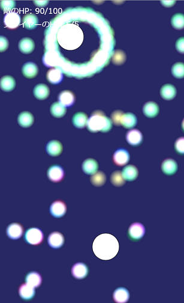

インストールしよう
Pythonのインストール
Pythonは動的型付け言語のひとつ。
以下のような実装がある。
CPython
最もよく使われる実装。今回はこれを使う。
PyPy

CPythonよりも実行速度が速い。その代わり起動は遅い。
※ PyPyのロゴは Samuel Reis によります。

※ 左図はCPythonのホームページのスクリーンショット
ネット上にはPythonのインストールにAnacondaを使うことを推奨している記事があるが、Anacondaは初心者が使うと問題が起きるため推奨しない。また、上記サイトからインストールする場合は先にアンインストールしておくこと。
Node.jsのインストール
JavaScriptはブラウザやNode.jsで動かすことのできる言語。実装にはV8やSpiderMonkeyなどがある。
ファイルから実行してみる
Pythonをファイルから実行してみよう
好きな場所に main.py というファイルを作って、以下の内容を書き込む
print("Hello, world!")
def f(x):
return 2 * x + 10
f(5)
コマンドプロンプト（ターミナル）を開いて、 py 今作ったファイルのパス と打つ
（例: py C:\Users\foo\main.py ）
※ MacOSやLinuxの場合は、 py の部分を python3 で読み替えてください。
以下のように表示されたら成功。
Hello, world!
20
JavaScript (Node.js) をファイルから実行してみよう
好きな場所にmain.jsというファイルを作って、以下の内容を打ち込む
// "Hello, world!" と表示させる
console.log("Hello, world!")
// 関数 f(x) = 2x + 10 を定義
const f = (x) => {
return 2 * x + 10;
};
// f(5)を計算して表示
console.log(f(5))
コマンドプロンプト（ターミナル）を開いて、 node 今作ったファイルのパス と打つ
（例: node C:\Users\foo\main.js ）
以下のように表示されたら成功。
Hello, world!
20
JavaScript (ブラウザ) をファイルから実行してみよう
JavaScriptファイルをブラウザ上で実行するにはHTMLファイルが必要。
好きな場所に index.html というファイルを作って、以下の内容を打ち込む
<!DOCTYPE html>
<html>
<head>
</head>
<body>
<script src="./main.js"></script>
</body>
</html>
index.html と同じフォルダ内に main.js というファイルを作って、以下の内容を打ち込む
// "Hello, world!" と表示させる
console.log("Hello, world!")
// 関数 f(x) = 2x + 10 を定義
const f = (x) => {
return 2 * x + 10;
};
// f(5)を計算して表示
console.log(f(5))
ブラウザ（Internet Explorerだとうまく実行できない可能性があるため、Microsoft EdgeやGoogle ChromeやMozilla Firefoxなどの他のブラウザを使用してください。）を開き、 index.html ファイルをブラウザへドラッグ
開発者ツールを開いて、出てきたパネル上でConsole (コンソール) タブを開いて、以下のように表示されていたら成功。
（開発者ツールの開き方はOSによります。LinuxやWindowsでは F12 や Ctrl+Shift+I などで開けます。）
Hello, world!
20
REPLを実行してみる
REPLとは
多くの言語にはREPL (Read-Eval-Print Loop)が存在する。
C#ならcsi、Javaならjshell、Goならgore、Rubyならirb、...
REPLを使うと、ファイルを用意せずに短いコードを簡単に実行できる。
REPL上では、入力した式の計算結果を print や console.log を使わなくても表示してくれる。
PythonのREPLを実行しよう
コマンドプロンプト（ターミナル）を開いて、 py と打つ
※ MacOSやLinuxの場合は、 python3 と打ってください。
以下のように打つ。
>>> "Hello, world!"
'Hello, world!'
>>> def f(x):
... return 2 * x + 10
...
>>> f(5)
20
いろいろ入力してみてください。（ f(10) や 2 + 4 など）
JavaScript (Node.js) のREPLを実行しよう
コマンドプロンプト（ターミナル）を開いて、 node と打つ
以下のように打つ。
> "Hello, world!"
'Hello, world!'
> const f = (x) => {
... return 2 * x + 10;
... };
undefined
> f(5)
20
いろいろ入力してみてください。（ f(10) や 2 + 4 など）
JavaScript (ブラウザ) のREPLを実行しよう
ブラウザ（Microsoft EdgeやMozilla FirefoxやGoogle ChromeやInternet Explorerなど）を開き、F12キーを押す
※ 空のタブを使ってください。
Console (コンソール) タブを開き、以下のように打つ。
> "Hello, world!"
"Hello, world!"
> const f = (x) => {
return 2 * x + 10;
};
undefined
> f(5)
20
いろいろ入力してみてください。（ f(10) や 2 + 4 など）
テキストエディタ

起動が速くて高機能です。
特に、VSCodeはTypeScript（後述）で開発されているのもあって、TypeScriptを使うならVSCodeを使うべきです。
拡張機能の Python TSLint を入れて使うべきです（※ TSLintは廃止予定で、将来的にESLintへ移ります）。他にも、 Debugger for Chrome, Code Spell Checkerなども入れるといいと思います。（細かい使い方はネットで調べてください。）
Python, JavaScriptの学習方法
バージョンについて
PythonもJavaScriptも活発に開発されていて、アップデートが速いです。
そのため、ネット上のサイトや本を見るときはどのバージョンを対象にした記事なのかに注意しないと、コードが動かなかったり、古くて今は使われていない手法だったりします。
Pythonのバージョン
| バージョン | リリース年 |
|---|---|
| 1 | 1994 |
| 2 (2.0 ~ 2.7) | 2000 |
| 3 (3.0 ~) | 2008 |
※ Python 2は2020年にサポートが終了した。 現時点での最新は3.7で、2018年にリリース。
JavaScriptのバージョン
| バージョン | リリース年 | 主な新機能 |
|---|---|---|
| ES3 | 1999 | |
| ES4 | リリース無し | |
| ES5 | 2009 | strict mode, Arrayのメソッド追加 |
| ES2015 (ES6) | 2015 | let, const, class, Arrayのメソッド追加, アロー関数, テンプレート文字列, for~of, Promise, ... |
| ES2016 | 2016 | 累乗演算子, Arrayのincludesメソッド |
| ES2017 | 2017 | async/await |
Pythonを学習しよう
CPythonの公式サイトがチュートリアルを用意してくれています。必ず読みましょう。
https://docs.python.org/ja/3/tutorial/index.html
理解できない部分がある場合、人に聞くか、本を買ってみるのもよいかもしれません。
JavaScript (ブラウザ) を学習しよう
ブラウザの1つであるMozilla Firefoxを開発しているMozillaが、MDN (Mozilla Developer Network)でJavaScriptのドキュメントを公開しています。
MDNのWebチュートリアル: https://developer.mozilla.org/ja/docs/Web/Tutorials
ただ、このチュートリアルは少し読みづらいので、他のサイトを見るか本を買った方が良いかもしれません。 とくにこちらのサイトがおすすめです: uhyohyo.net/JavaScript初級者から中級者になろう （名前に反して、JavaScriptを全く知らない方にも良いサイトです。）
ブラウザ上で複数のJavaScriptファイルを組み合わせて使う場合、WebPackやParcelが必要になります。（使わなくてもできるが、大変）
JavaScriptはInternet Explorerではまともに開発できません（動作が重いことや、JavaScriptのバージョンが古いことなどが原因）。他のブラウザを使いましょう。
JavaScript (Node.js) を学習しよう
Node.jsは基本的にターミナル上で動作するため、ブラウザ上でJavaScriptを実行するときに使える document や alert などの画面の表示に関する変数・関数が存在しません。
その代わりに、主にサーバーに関わる、Node.js専用の多くの機能が提供されています。Node.jsのドキュメントで確認できます。
Node.jsにはパッケージマネージャであるnpm (Node Package Manager)が付属しています。（Pythonのpipに相当）
JavaScriptの古い書き方について
JavaScriptは下位互換性を保ちながらアップデートされているため、今はまず使われない古い書き方が多く存在します。それらの一部をここで示しておきます。
関数
// 古い書き方
// クラス定義と見分けがつきにくいのが問題。
// thisの束縛、変数名の巻き上げ、ジェネレータ構文の使用を目的として、あるいはわかりやすさから、こちらを選ぶこともある。
function foo() {
// 関数の本体
}
// 新しい書き方
const foo = () => {
// 関数の本体
};
変数
// 古い書き方
var x;
// 新しい書き方
// 再代入するならlet、再代入しないならconstを使う。
let x;
const x;
クラス
// 古い書き方
// functionでコンストラクタを定義し、prototypeでメソッドを定義する。
function Foo() {
this.x = 30;
}
Foo.prototype.bar = function() {
console.log(this.x);
};
new Foo().bar(); // 30
// 新しい書き方
// class文を使う。class文は古い書き方の糖衣構文。
class Foo {
constructor() {
this.x = 30;
}
bar() {
console.log(this.x);
}
}
new Foo().bar();
ブロックスコープ
// 古い書き方
// (function(){})() や !function(){}() など。
(function() {
// スコープ
})();
// 新しい書き方
{
// スコープ
}
型を付けよう
PythonやJavaScriptは動的型付け言語であり、変数に型がありません。
これは不便なことが多いので、型付けする方法が用意されています。積極的に使っていくべきです。
Pythonの型アノテーションを使う
Pythonでは型アノテーションを使って型を明示的に指定できます。 使い方はCPythonの公式ドキュメントを参照: https://docs.python.org/ja/3/library/typing.html
例
{# 変数
y: str = "name"
# 関数
def f(x: int) -> int:
return x * 30
TypeScriptを使う
JavaScriptにはTypeScriptを使って型を付けられます。TypeScriptはJavaScriptに型を指定する文法を加えた言語で、JavaScriptに変換されてから実行されます。 TypeScriptの公式サイトのPlaygroundではブラウザ上で簡単にTypeScriptを試せます。
Node.jsでTypeScriptを使う場合、 ts-node が便利です。
コマンドプロンプト（ターミナル）上で npm install -g ts-node typescript と打つとts-nodeがインストールされます
（ts-nodeの使用にはtypescriptのインストールも必要）。
あとは、 ts-node ファイル名 と打てば、TypeScriptのファイルを実行できるはずです。
（内部的には、TypeScriptのファイルがJavaScriptに変換されてからNode.jsで実行されます。）
※
ts-nodeコマンドが存在しないと表示された場合は、PATHを通す必要があります。Windowsの場合は%APPDATA%\npmを追加すればよいです。
TypeScriptファイルをJavaScriptに変換するには、以下のコマンドをコマンドプロンプト（ターミナル）上で打ちます。
$ # 以下のコマンドを変換したいファイルのあるディレクトリ上で実行する
$ npm init -y # npmの初期化。package.jsonが生成される。
$ npm install -D typescript # TypeScriptのインストール
$ npx tsc --init # TypeScriptの初期化。tsconfig.jsonが生成される。
main.ts のようなファイルを作り、コードを書き、コマンドプロンプト（ターミナル）上で npx tsc と打てば、TypeScriptからJavaScriptへ変換されます。
TypeScriptでは、変換先のJavaScriptのバージョンが低いときJavaScriptのいくつかの最新の機能（Arrayの関数やMapなど）を使えません。
tsconfig.json の "target" を "ES2017" などに変更すれば使えるようになります。
TypeScriptはJavaScriptとほぼ同じ です。最低限覚えるべき文法を記しておきます。 細かい使い方はサンプルプログラムを見てください。 これを読んだら、次にTypeScriptの型初級を見ることをお勧めします。
TypeScriptはJavaScriptさえ分かっていれば学習コストが低いことが特徴なので、とりあえずは軽く使ってみて、興味が出たらTypeScriptの型初級を読むといいです。
// 変数はつねに1つの型を持つ。変数の型は最初に代入された値の型によって決まる。
let x = 20 // xはnumber型になる
x = "foo" // JavaScriptではこれは許されるが、TypeScriptではコンパイルエラー。
// 明示的に変数の型を指定できる
let y: number = 20 // 変数の型を指定して、同時に初期値を代入
let z: number // 変数を型を指定して宣言
// 関数の引数と返り値の型を以下のように指定できる
const f = (x: number, y: string): string => { // numberとstringを受け取ってstringを返す
return x + y;
}
console.log(f(20, "foo").length) // fの使用例
// 型には他に以下のようなものが存在する
let a: boolean = true
let b: null = null
let c: { x: number, y: number } = { x: 20, y: 40 }
let d: (x: number) => void = (x: number) => { console.log(x) } // numberを受け取ってundefinedを返す関数型
let e: number[] = [] // 数値の配列
// 型指定で毎回 { x: number, y: number } みたいに書くのは長くてつらいため、
// interface文で型に名前を付けられる
interface I {
x: number;
y: number;
}
let d: I = { x: 20, y: 40 }
// any型の変数はTypeScriptの型チェックから無視され、どんな操作も可能になる。
// asでキャストできる。anyは危険なため、本当に必要な時にしか使うべきでない。
console.log(undefined.foo) // これはコンパイルエラーになる
console.log((undefined as any).foo) // これはコンパイルはできるが実行時に TypeError: Cannot read property 'foo' of undefined
// ファイル外（scriptタグの埋め込みなど）で定義された変数は、TypeScriptでは
// 使おうとしても存在しないといわれてコンパイルエラーになるため、declare文が必要。
// declare let, declare const, declare class, ... を使える。
// あるいは、型定義ファイルというdeclare文を使ったファイルを別途用意する。
declare const someLibrary: any // 変数 someLibrary が any型でグローバルに存在すると宣言
console.log(someLibrary) // 変数 someLibrary を使えるようになった
// CommonJSの require() を使う場合、const x = require("foo") のように書くとTypeScript
// から認識されない。CommonJS用の文法 import x = require("foo") を使う必要がある。
import fs = require("fs")
// ES6の import はJavaScriptと同じ。
import fs from "fs"
// x | y で型xまたは型yである型を定義できる。
// そのような型の変数を値を使う場合、先にif文で型をチェックしておく必要がある。
let x: number | null = null
console.log(x + 20) // コンパイルエラー: Object is possibly 'null'.
if (typeof x === "number") {
// このif文内ではxの型が一時的に number | null から number に変わる
console.log(x + 20) // 問題なし
}
// 他にも extends/infer, typeof, keyof, ...といろいろあるが、軽く使う分には必要ない。
クロスブラウザ対応について

各ブラウザのJavaScriptのバージョン（実装状況）はcaniuse.comなどで確認できます。
例えばES2015 (ES6)を使えるかは、https://caniuse.com/#search=ES6 で確認できます。
これを見ると、IE (Internet Explorer) ではES6をほとんど使えないことがわかります。
現在はBabelなどを使ってES2015以降のコードをES5以前のコードに変換して対応するのが主流です。
（TypeScriptはデフォルトではES5のコードに変換されます。）
サンプルプログラム1: かんたんなサーバー
この節について
ためしに簡単なプログラムを書いて、各言語の雰囲気を感じてもらうために書きました。
パッケージマネージャの使い方を示すために、意味もなく外部ライブラリを持ち出しています。
PythonやNode.jsのコードは、実行環境やライブラリのアップデートで動かなくなることがあります。もし最新バージョンの環境で動かなかったら、このページの管理者に報告してください。
今回は入門のため省略しますが、実際には package-lock.json (各ライブラリのどのバージョンを使うかが書かれたファイル) で対処できます。
パッケージマネージャとは
Pythonにはpip、Node.jsにはnpmというパッケージマネージャが付属している。
パッケージマネージャは外部ライブラリのダウンロードに使うツールで、pipならpypi.org、npmならnpmjs.comからダウンロードしてくる。
pipではダウンロードしたファイルはPC全体から呼び出せるが、npmでは -g オプションを付けないとき特定のフォルダ内からのみ呼び出せる。
各ライブラリにはたいてい多くの依存ライブラリが存在して、1つのライブラリを install すると同時にそのライブラリが依存している多くのライブラリが自動でダウンロードされる。
ライブラリを使うときは、必ずライセンスを確認すること。（MITとかBSDとかGPLとか）
Python
まずpipを使って必要なライブラリをインストールする。VSCodeを使う場合、
- 空のフォルダを好きな場所に作る
- もしVSCodeで既に別のフォルダを開いていたら
Ctrl+K -> Fで閉じる Ctrl+K -> Ctrl+Oからフォルダを開く（あるいはコマンドプロンプト上でcode フォルダへのパス）Ctrl+Shift+@でコマンドプロンプト（ターミナル）を開いてコマンドを打つ（ ターミナルの種類の切り替えはCtrl+Shift+P->select default shellからできます。）
エラーがおきたら：
pipコマンドが存在しないと表示された場合は、py -m pip（MacOSやLinuxではpython3 -m pip）を使ってください。
Windowsで「アクセスが拒否されました」と表示される場合、コマンドプロンプトを管理者権限で開いてもう一度実行してください。
pipコマンドでダウンロードしたファイルは、バージョンやOSによって異なりますが、Windowsでバージョン3.7ならC:\Program Files\Python37下らへんに置かれます。
インストールしたパッケージの一覧はpip listで見れます。
$ pip install -U Flask
次に、ファイル main.py （名前は何でもよい）を作って、以下のように書く。
一行目で今インストールしたFlaskを呼び出しています。
/にアクセスしたら"Index Page"と訪問者数、/fooにアクセスしたら"Foo Page"を表示するプログラムです。
from flask import Flask
app = Flask(__name__)
count = 0
@app.route('/')
def index_page():
global count
count += 1
return f"Index Page<br>あなたは{count}番目の訪問者です。"
@app.route('/foo')
def foo_page():
return "Foo Page"
app.run('0.0.0.0', 3000, False)
py main.py （あるいは python3 main.py ）で実行した状態で、http://localhost:3000/を開くと"Index Page"と訪問者数、http://localhost:3000/fooを開くと"Foo Page"と表示される。
JavaScript/TypeScript
まずnpmを使って必要なライブラリをインストールする。VSCodeを使う場合、
- 空のフォルダを好きな場所に作る
1.もしVSCodeで既に別のフォルダを開いていたら
Ctrl+K -> Oで閉じる Ctrl+K -> Ctrl+Fからフォルダを開く（あるいはコマンドプロンプト上でcode フォルダへのパス）Ctrl+Shift+@でコマンドプロンプト（ターミナル）を開いてコマンドを打つ（ターミナルの種類の切り替えはCtrl+Shift+P->select default shellからできます。）
npmを使うには、最初に
npm init -yでの初期化が必要です。 これによって、カレントディレクトリ下にpackage.jsonファイルが生成されます。
npm installを使うと、ライブラリをダウンロードできます。ライブラリは-gを付けなかった場合カレントディレクトリ下のnode_modulesフォルダ内に置かれます。中を見ると多くのファイルが存在することを確認できると思います。
TypeScriptで外部ライブラリを使うときには、同時に型定義ファイル（.d.tsで終わる名前を持つファイル）が必要になります。@types/ライブラリ名として型定義ファイルが配布されている場合が多いです。
$ # 以下のコマンドはカレントディレクトリ下にファイルを生成するため、
$ # 新しくフォルダを作ってその中へcdで移動してから行うべき。
$ npm init -y
$
$ # TypeScriptに必要な外部ライブラリのインストールと初期化
$ npm install -g ts-node typescript # 既にts-nodeをインストールしたならこの行は不要
$ npm install -D typescript tslint # ツールをインストールする際には-Dを付けるとよい
$ tsc --init # もしtscコマンドが存在しないと言われたら、PATHを通すこと。Windowsなら%APPDATA%\npmに通す。
$ npx tslint --init # -gを付けずにインストールしたライブラリをコマンドとして実行するときは、npxを付ける。
$
$ # サーバ用の外部ライブラリとその型定義ファイルのインストール
$ npm install express
$ npm install -D @types/express
次にファイル main.ts （名前は何でもよい）を作って、以下のように書く。ただし、1.でコマンドを打ったディレクトリにファイルを置くこと。
一行目で先ほどインストールしたexpressをインポートしている。
TypeScriptでは、JavaScriptのconst X = require("Y")をimport X = require("Y")と書く必要がある。
import express = require("express");
const app = express();
let count = 0;
app.get("/", (req, res) => {
count++;
res.send(`Index Page<br>あなたは\${count}番目の訪問者です。`);
});
app.get("/foo", (req, res) => res.send("Foo Page"));
const port = 3000;
app.listen(port, () => console.log("Listening on port " + port));
ts-node main.ts で実行した状態で、http://localhost:3000/を開くと"Index Page"と訪問者数、http://localhost:3000/fooを開くと"Foo Page"と表示される。
このままだと、 console.log の部分に Calls to 'console.log' are not allowed.tslint(no-console) という警告がでます。
無視してもいいですが、ディレクトリ内のtslint.jsonの"rules"に以下のように一行足せば消えます。
"rules": {
"no-console": false
},
何をしたのか
自分のPCが接続されているLAN内からのみアクセスできるサーバを作りました。
自分のプライベートIPアドレスがわかれば、他のPCからもアクセスできます。
コマンドプロンプトでipconfig（MacOSやLinuxならifconfig）と打ち、 192.168. や 10. や 172. で始まるアドレスを探してください（複数ありますが、"IPv4アドレス"や"inet"となっているものです）。
これがプライベートアドレスなので、たとえば 192.168.2.104 だったら、http://192.168.2.104:3000で同一LAN内の他のPCからもアクセスできます。スマホ等で試してみてください。
pypi.orgとnpmjs.comを見よう
先ほど使用した外部ライブラリをpypi.orgとnpmjs.comで確認する。 英語しかないが、簡単な使い方や、各ライブラリのドキュメントやホームページへのリンクなどを確認できる。
Flask: https://pypi.org/project/Flask/
express: https://www.npmjs.com/package/express
typescript: https://www.npmjs.com/package/typescript
ts-node: https://www.npmjs.com/package/ts-node
@types/express: https://www.npmjs.com/package/@types/express
npmなら weekly downloads で人気度を確認できる。pypiはダウンロード数を公開していないので、ライブラリのGitHubページのスター数を見るとよい。
@typesとは何か
npmにおいて、"@A/B"という名前のパッケージ名は、"ユーザーAが公開しているパッケージB"という意味。@typesはDefinitely Typedという団体が管理していて、TypeScriptの型定義ファイルをまとめている。
サンプルプログラム2: Parcel & p5.js
この節について
この節はTypeScriptの詳細な使い方を示すために書きました。
完全な初心者用ではないです。以下のコードは許可なくどう使用しても問題ありません。
ライブラリのインストール
今回は、p5を使います。
（最初はPixiJSを使おうと思ったが、型定義ファイルが不完全だったり難易度が高かったりするのでやめた。ただ、機能はPixiJSの方が上なはず。） ブラウザ上で複数ファイルのJavaScriptファイルを動かすために、Parcelを使います。（WebPackでもよいが、こちらの方が簡単。）
$ npm init -y
$
$ # Parcel, TypeScript
$ npm install -g parcel-bundler # 既にparcel-bundlerをインストールしたならこの行は不要
$ npm install -D typescript tslint
$ npx tslint --init
$ npx tsc --init
$
$ # p5.js
$ npm install p5
$ npm install -D @types/p5
Parcelを試す
まず、上記のコマンドを打ったのと同じディレクトリで、 index.html を作る。
<!DOCTYPE html>
<html>
<head>
<meta charset="UTF-8">
<meta name="viewport" content="width=device-width, initial-scale=1.0">
<meta http-equiv="X-UA-Compatible" content="ie=edge">
<title>Sample Game</title>
</head>
<body>
<script src="./main.ts"></script>
</body>
</html>
main.ts も作る。
document.body.innerText = `3 + 2 = ${3 + 2}`;
あとは、コマンドプロンプト（ターミナル）で parcel index.html と打てば、ビルドされて同時にサーバーが起動する。
http://localhost:1234にブラウザでアクセスして、 3 + 2 = 5 と表示されていることを確認する。（ parcel index.html --open とすれば、自動でブラウザが開く。）
コードを編集して保存すると、ブラウザがリロードされて表示が変わる。
Ctrl + C でサーバーを終了させる。
p5.jsを試す
main.tsに以下のように書く
p5.jsをglobal mode（デフォルト）で使う場合@types/p5/global.d.tsを使うようにと書いてあったため、p5/globalをインポートしています。
import "p5";
import {} from "./node_modules/@types/p5/global.d";
function setup() {
createCanvas(640, 480);
}
function draw() {
ellipse(50, 50, 80, 80);
}
// p5はグローバルに定義されたsetupやdraw関数を参照するため、
// 手作業でグローバルオブジェクト（window）に各関数を追加する。
(window as any).setup = setup;
(window as any).draw = draw;
parcel index.html で実行して http://localhost:1234/ を見れば、楕円が表示されているはず。
型定義ファイルの不足を補おう
p5.jsのリファレンスのKeyboardの欄を見ると、キー入力の判定にはkeyIsDownを使うことがわかる。 レファレンスではこのように使っている。
if (keyIsDown(RIGHT_ARROW)) {
// 右矢印キーを押しているときの処理
}
円がキー入力で動くようにする。
main.ts
import "p5";
import {} from "./node_modules/@types/p5/global.d";
function setup() {
createCanvas(640, 480);
}
let x = 50;
function draw() {
clear();
if (keyIsDown(RIGHT_ARROW)) {
x += 4;
}
ellipse(x, 50, 80, 80);
}
(window as any).setup = setup;
(window as any).draw = draw;
すると、 RIGHT_ARROW に、 Cannot find name 'RIGHT_ARROW'. というエラーがでる（既に修正されていたら、出ない可能性もある）。
p5 とその型定義である @types/p5 は別々に作られているため、実際には RIGHT_ARROW という変数は存在するにも関わらず、型定義に RIGHT_ARROW が存在しなくてエラーになっている。これはTypeScriptではよくあること。
解決方法はいくつかある。
// a. 呼び出し元オブジェクトをany型にキャストする
// RIGHT_ARROW は window.RIGHT_ARROW の略なので、
// windowをany（型チェックを無視することを表す型）にキャストすることで、強制的にエラーをなくせる。
if (keyIsDown((window as any).RIGHT_ARROW) {
// ...
}
// b. declare文で型を定義する
// 型定義ファイルはdeclareを使って型を定義している。
// 自分でdeclareで型定義を付け足す。
declare const RIGHT_ARROW: number; // main.tsの好きな場所に書く
どうしてもTypeScriptの型エラーを解決できない場合には，最終手段として
//@ts-ignoreがあります。これは特定の行の型チェックを完全に無効化します。
シューティングゲーム

シューティングゲームを書きました。参考にしてください。
趣味でreadonlyを全プロパティにつけていますが、気にしないでください。
main.ts
import "p5";
import { Graphics } from "p5";
import {} from "./node_modules/@types/p5/global.d";
import { RigidBody } from "./rigid_body";
import { Vec2D, Vec3D } from "./vec";
const SCREEN_SIZE: { readonly w: number, readonly h: number} = { w: 550, h: 900 };
const PLAYER_SPEED = 8;
interface Light {
color: Vec3D;
pos: Vec2D;
}
interface Shot {
readonly lights: ReadonlyArray<Light>;
readonly rigidBody: RigidBody;
readonly vibration: number;
}
const Shot = {
new: (pos: Vec2D, velocity: Vec2D, colors: ReadonlyArray<Vec3D>, vibration: number): Shot => {
return {
lights: colors.map((color) => ({ color, pos: Vec2D.new(0, 0) })),
rigidBody: RigidBody.new(pos, velocity),
vibration,
};
},
update: (shot: Shot): Shot => {
return {
lights: shot.lights.map((light) => {
const posMoveFor = Vec2D.new(
Math.random() * shot.vibration,
Math.random() * shot.vibration);
const pos = Vec2D.add(
Vec2D.times(light.pos, 0.9),
Vec2D.times(posMoveFor, 0.1));
return {
color: light.color,
pos,
};
}),
rigidBody: RigidBody.update(shot.rigidBody),
vibration: shot.vibration,
};
},
};
interface GameState {
readonly playerPos: Vec2D;
readonly enemyPos: Vec2D;
readonly playerHp: number;
readonly enemyHp: number;
readonly playerShots: ReadonlyArray<Shot>;
readonly enemyShots: ReadonlyArray<Shot>;
readonly frameCount: number;
readonly scene: "Playing" | "GameClear" | "GameOver";
}
const movePlayer = (playerPos: Vec2D): Vec2D => {
if (keyIsDown(RIGHT_ARROW)) {
playerPos = Vec2D.add(playerPos, Vec2D.new(PLAYER_SPEED, 0));
}
if (keyIsDown(LEFT_ARROW)) {
playerPos = Vec2D.add(playerPos, Vec2D.new(-PLAYER_SPEED, 0));
}
if (keyIsDown(DOWN_ARROW)) {
playerPos = Vec2D.add(playerPos, Vec2D.new(0, PLAYER_SPEED));
}
if (keyIsDown(UP_ARROW)) {
playerPos = Vec2D.add(playerPos, Vec2D.new(0, -PLAYER_SPEED));
}
return Vec2D.new(
Math.min(SCREEN_SIZE.w, Math.max(0, playerPos.x)),
Math.min(SCREEN_SIZE.h, Math.max(0, playerPos.y)));
};
const moveEnemy = (enemyPos: Vec2D, frameCount: number): Vec2D => {
return Vec2D.new(
300 + Math.cos(frameCount / 30) * 100,
100 + Math.sin(frameCount / 30) * 20);
};
const appendNewPlayerShots = (
playerShots: ReadonlyArray<Shot>,
playerPos: Vec2D, frameCount: number): ReadonlyArray<Shot> => {
const shotsGenerated = new Array<Shot>();
if (frameCount % 9 === 0) {
shotsGenerated.push(Shot.new(
Vec2D.add(playerPos, Vec2D.new(-30, -30)),
Vec2D.new(0, -20),
[Vec3D.new(255, 255, 100)], 0));
shotsGenerated.push(Shot.new(
Vec2D.add(playerPos, Vec2D.new(30, -30)),
Vec2D.new(0, -20),
[Vec3D.new(255, 255, 100)], 0));
}
return [...playerShots, ...shotsGenerated];
};
const createEnemyShot = (pos: Vec2D, theta: number, speed: number, color: Vec3D, vibration: number): Shot => {
const unitVector = Vec2D.new(Math.cos(theta), Math.sin(theta));
const colors = [color];
colors.push(
Vec3D.new(0, 0, 255), Vec3D.new(255, 0, 0), Vec3D.new(0, 255, 0));
return Shot.new(
Vec2D.add(pos, Vec2D.times(unitVector, 30)),
Vec2D.times(unitVector, speed),
colors, vibration);
};
const appendNewEnemyShots = (
enemyShots: ReadonlyArray<Shot>,
enemyPos: Vec2D, frameCount: number): ReadonlyArray<Shot> => {
const shotsGenerated = new Array<Shot>();
switch (Math.floor(frameCount / 400) % 4) {
case 0:
// 全方向ランダム
if (frameCount % 25 === 0) {
for (let i = 0; i < 8; i++) {
shotsGenerated.push(createEnemyShot(
enemyPos, Math.random() * Math.PI * 2, 3, Vec3D.new(255, 255, 255), 40));
}
}
break;
case 1:
// n方向固定
if (frameCount % 25 === 0) {
const numWays = 20;
for (let i = 0; i < numWays; i++) {
shotsGenerated.push(createEnemyShot(
enemyPos, i / numWays * Math.PI * 2, 6, Vec3D.new(0, 255, 0), 15));
}
}
break;
case 2:
// n方向回転 * m
if (frameCount % 18 === 0) {
const numWays = 13;
for (let i = 0; i < numWays; i++) {
shotsGenerated.push(createEnemyShot(
enemyPos, (i + frameCount / 100) / numWays * Math.PI * 2, 8, Vec3D.new(0, 255, 255), 12));
shotsGenerated.push(createEnemyShot(
enemyPos, (i - frameCount / 100) / numWays * Math.PI * 2, 8, Vec3D.new(0, 0, 255), 12));
}
}
break;
case 3:
// 全方向ランダム（高速）
if (frameCount % 18 === 0) {
for (let i = 0; i < 20; i++) {
shotsGenerated.push(createEnemyShot(
enemyPos, Math.random() * Math.PI * 2, 15, Vec3D.new(255, 0, 255), 15));
}
}
break;
}
return [...enemyShots, ...shotsGenerated];
};
const handleShotsCollisions = (aPos: Vec2D, bShots: ReadonlyArray<Shot>, aHp: number)
: { newBShots: ReadonlyArray<Shot>, newAHp: number} => {
const enemyShotsFiltered = bShots.filter((shot) => {
if (Vec2D.abs(Vec2D.subtract(shot.rigidBody.pos, aPos)) < 20) {
aHp -= 1;
return false;
}
return true;
});
return {
newAHp: aHp,
newBShots: enemyShotsFiltered,
};
};
const isShotInScreen = (shotPos: Vec2D): boolean => {
return -30 < shotPos.x && shotPos.x < SCREEN_SIZE.w + 30 &&
-30 < shotPos.y && shotPos.y < SCREEN_SIZE.h + 30;
};
const getGameScene = (
scene: GameState["scene"], enemyHp: number, playerHp: number): GameState["scene"] => {
if (scene !== "Playing") {
return scene;
}
if (enemyHp <= 0) {
return "GameClear";
} else if (playerHp <= 0) {
return "GameOver";
}
return scene;
};
const update = (gameState: GameState): GameState => {
// プレイヤー、敵の移動
const playerPos = movePlayer(gameState.playerPos);
const enemyPos = moveEnemy(gameState.enemyPos, gameState.frameCount);
// 弾の生成と移動と削除
const playerShots: ReadonlyArray<Shot> =
appendNewPlayerShots(gameState.playerShots, playerPos, gameState.frameCount)
.map((shot) => Shot.update(shot))
.filter((shot) => isShotInScreen(shot.rigidBody.pos));
const enemyShots: ReadonlyArray<Shot> =
appendNewEnemyShots(gameState.enemyShots, enemyPos, gameState.frameCount)
.map((shot) => Shot.update(shot))
.filter((shot) => isShotInScreen(shot.rigidBody.pos));
// プレイヤーと敵の弾の衝突
const { newBShots: enemyShotsAfterCollision, newAHp: playerHpAfterCollision} =
handleShotsCollisions(playerPos, enemyShots, gameState.playerHp);
// 敵とプレイヤーの弾の衝突
const { newBShots: playerShotsAfterCollision, newAHp: enemyHpAfterCollision} =
handleShotsCollisions(enemyPos, playerShots, gameState.enemyHp);
return {
enemyHp: enemyHpAfterCollision,
enemyPos,
enemyShots: enemyShotsAfterCollision,
frameCount: gameState.frameCount + 1,
playerHp: playerHpAfterCollision,
playerPos,
playerShots: playerShotsAfterCollision,
scene: getGameScene(gameState.scene, enemyHpAfterCollision, playerHpAfterCollision),
};
};
const drawUI = (gameState: GameState): void => {
switch (gameState.scene) {
case "GameClear":
textSize(35);
textAlign(CENTER);
text("ゲームクリア！", 0, SCREEN_SIZE.h / 2, SCREEN_SIZE.w);
break;
case "GameOver":
textSize(35);
textAlign(CENTER);
text("ゲームオーバー！", 0, SCREEN_SIZE.h / 2, SCREEN_SIZE.w);
break;
case "Playing":
textSize(23);
textAlign(LEFT);
text(`敵のHP: ${gameState.enemyHp}/100`, 10, 40);
text(`プレイヤーのHP: ${gameState.playerHp}/5`, 10, 80);
break;
}
if (gameState.scene !== "Playing") {
textSize(23);
textAlign(RIGHT);
text("画面をクリックしてリセット", 10, 40, SCREEN_SIZE.w - 10);
}
};
const drawShots = (shots: ReadonlyArray<Shot>): void => {
shots.forEach((shot) => {
shot.lights.forEach((light) => {
const pos = Vec2D.add(shot.rigidBody.pos, light.pos);
image(
getShotLightImage(light.color),
pos.x - 20, pos.y - 20, 55, 55);
});
});
};
const drawGame = (gameState: GameState): void => {
background(40, 40, 100);
// 敵
fill(color(255, 255, 255));
circle(gameState.enemyPos.x, gameState.enemyPos.y, 40);
circle(gameState.playerPos.x, gameState.playerPos.y, 40);
// 弾
blendMode(ADD);
drawShots(gameState.playerShots);
drawShots(gameState.enemyShots);
blendMode(BLEND);
// 画面上の表示
drawUI(gameState);
};
const getShotLightImage = (() => {
const imgList: { [rgb: string]: Graphics } = {};
return (color: Vec3D): Graphics => {
const colorName = `${color.x}, ${color.y}, ${color.z}`;
if (colorName in imgList) {
return imgList[colorName];
}
const img: any = createGraphics(100, 100);
img.noStroke();
for (let i = 50; i > 0; i--) {
const circleColor = Vec3D.add(
Vec3D.times(color, (1 - i / 50)),
Vec3D.times(Vec3D.new(0, 0, 0), i / 50));
img.fill(circleColor.x, circleColor.y, circleColor.z);
img.circle(img.width / 2, img.height / 2, i);
}
imgList[colorName] = img;
return img;
};
})();
{
(window as any).setup = () => {
createCanvas(SCREEN_SIZE.w, SCREEN_SIZE.h);
};
const initialGameState: GameState = {
enemyHp: 100,
enemyPos: Vec2D.new(SCREEN_SIZE.w / 2, 100),
enemyShots: [],
frameCount: 0,
playerHp: 5,
playerPos: Vec2D.new(SCREEN_SIZE.w / 2, 700),
playerShots: [],
scene: "Playing",
};
let gameState = initialGameState;
(window as any).draw = () => {
if (gameState.scene !== "Playing" && mouseIsPressed) {
gameState = initialGameState;
}
gameState = update(gameState);
drawGame(gameState);
};
}
p5_key_names.ts
declare const ALT: 18;
declare const BACKSPACE: 8;
declare const CONTROL: 17;
declare const DELETE: 46;
declare const DOWN_ARROW: 40;
declare const ENTER: 13;
declare const ESCAPE: 27;
declare const LEFT_ARROW: 37;
declare const OPTION: 18;
declare const RETURN: 13;
declare const RIGHT_ARROW: 39;
declare const SHIFT: 16;
declare const TAB: 9;
declare const UP_ARROW: 38;
rigid_body.ts
import { Vec2D } from "./vec";
// 速度と位置を持つ物体
export interface RigidBody {
pos: Vec2D;
velocity: Vec2D;
}
export const RigidBody = {
new: (pos: Vec2D, velocity: Vec2D) => ({ pos, velocity }),
// 位置に速度を加算
update: (obj: RigidBody): RigidBody =>
({ pos: Vec2D.add(obj.pos, obj.velocity), velocity: obj.velocity }),
};
vec.ts
// イミュータブルな二次元ベクトル
export interface Vec2D {
readonly x: number;
readonly y: number;
}
export const Vec2D = {
// 加減乗除, 絶対値, 生成
abs: (a: Vec2D): number =>
Math.sqrt(a.x * a.x + a.y * a.y),
add: (a: Vec2D, b: Vec2D): Vec2D => ({
x: a.x + b.x,
y: a.y + b.y,
}),
divide: (a: Vec2D, x: number): Vec2D => ({
x: a.x / x,
y: a.y / x,
}),
dot: (a: Vec2D, b: Vec2D): number =>
a.x * b.x + a.y * b.y,
new: (x: number, y: number): Vec2D => ({ x, y }),
subtract: (a: Vec2D, b: Vec2D): Vec2D => ({
x: a.x - b.x,
y: a.y - b.y,
}),
times: (a: Vec2D, x: number): Vec2D => ({
x: a.x * x,
y: a.y * x,
}),
};
// イミュータブルな三次元ベクトル
export interface Vec3D {
readonly x: number;
readonly y: number;
readonly z: number;
}
export const Vec3D = {
// 加減乗除, 絶対値, 生成
abs: (a: Vec3D): number =>
Math.sqrt(a.x * a.x + a.y * a.y + a.z * a.z),
add: (a: Vec3D, b: Vec3D): Vec3D => ({
x: a.x + b.x,
y: a.y + b.y,
z: a.z + b.z,
}),
divide: (a: Vec3D, x: number): Vec3D => ({
x: a.x / x,
y: a.y / x,
z: a.z / x,
}),
dot: (a: Vec3D, b: Vec3D): number =>
a.x * b.x + a.y * b.y,
new: (x: number, y: number, z: number): Vec3D =>
({ x, y, z }),
subtract: (a: Vec3D, b: Vec3D): Vec3D => ({
x: a.x - b.x,
y: a.y - b.y,
z: a.z - b.z,
}),
times: (a: Vec3D, x: number): Vec3D => ({
x: a.x * x,
y: a.y * x,
z: a.z * x,
}),
};
index.html
<!DOCTYPE html>
<html>
<head>
<meta charset="UTF-8">
<meta name="viewport" content="width=device-width, initial-scale=1.0">
<meta http-equiv="X-UA-Compatible" content="ie=edge">
<title>Sample Game</title>
<style>
* {
margin: 0;
padding: 0;
}
html, body {
height: 100%;
background: black;
}
.p5Canvas {
display: block;
margin: auto;
width: auto !important;
height: 100% !important;
}
</style>
</head>
<body>
<script src="./main.ts"></script>
</body>
</html>
まとめ
CPythonの公式ドキュメント やuhyohyo.netや TypeScriptの型初級(uhyo) などを読みましょう。